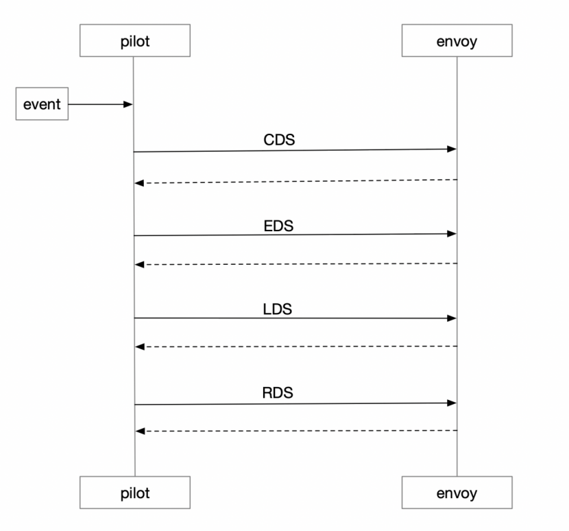
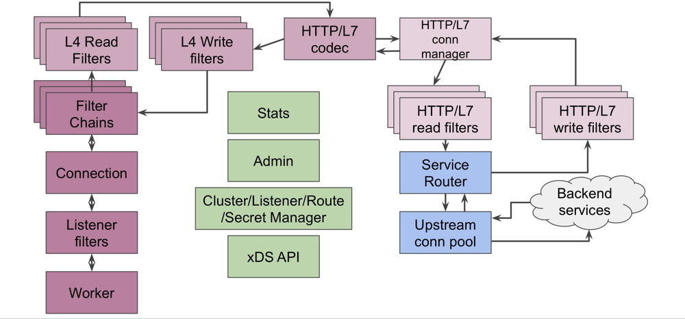
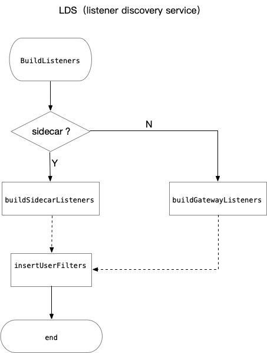
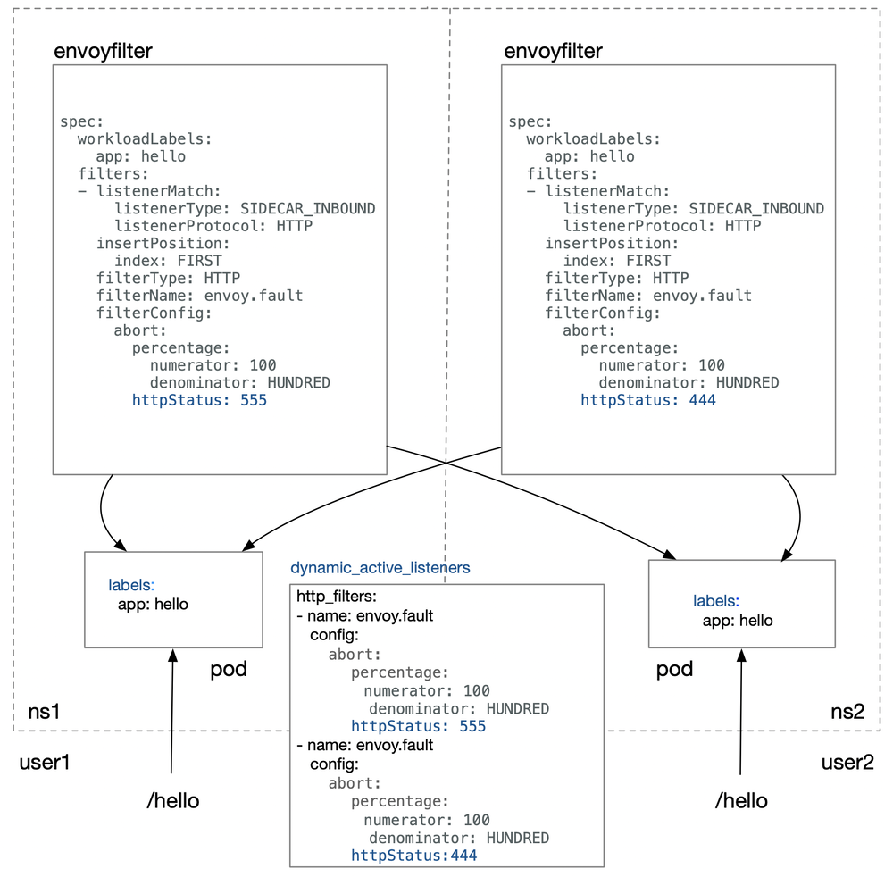
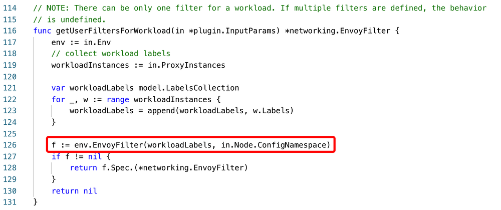
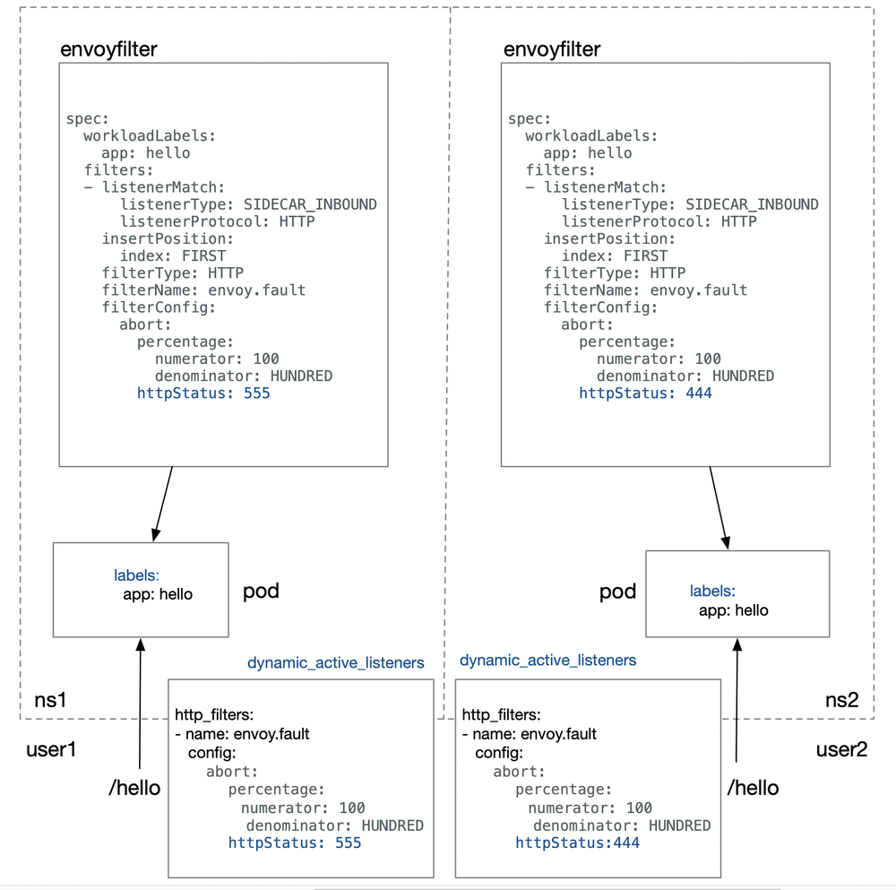

KUN（中文名鲲）是UCloud面向内部的基于Kubernetes的资源交付平台，提供监控告警、CI/CD、网络双栈、Service Mesh等能力。在践行Service Mesh理念的过程中，面对Istio的不足，团队针对其源码做了大量改进，包括给网络子系统Pilot下的资源做隔离，对EnvoyFilter做深度优化等，使其能在生产环境稳定运行，并提供强大的扩展能力。截止目前，KUN平台上已有175个应用通过Istio提供服务。下面将分享我们在这方面的实践经验。
Istio流量管理策略
Istio中的流量管理策略是通过Pilot统一管理下发给Envoy的，Envoy作为数据面，对外提供XDS接口。为了保证最终一致性，Pilot实现了Envoy提供的ADS(Aggregated Discovery Service)接口，执行顺序为：CDS, EDS, LDS, RDS。Pilot本身是无状态的，所有的资源配置全部以CRD实例的形式保存在Kubernetes集群上，Envoy和Pilot连接建立完成以后，Pilot以事件通知的形式触发推送，Envoy配置更新生效。

统一的配置管理简化了运维成本，同时也意味着定制化能力的缺失。享受Pilot通用配置管理所带来的便利化的同时，又要针对具体的sidecar流量管理做微调，如何才能做到两者兼顾呢？这就涉及今天要介绍的主题：EnvoyFilter
Envoy架构
EnvoyFilter是Istio中自定义的一种网络资源对象，用来更新配置Envoy中的filter，为服务网格控制面提供了更强大的扩展能力，使Envoy中filter chain具备自定义配置的能力。
我们先来看下Envoy的整体架构：

从上图中我们可以看到Envoy中包含两种类型的filter:L4 filter(即network filter)和L7 filter。EnvoyFilter中可以自定义配置的filter即为这两种filter。从下面的监听器配置可以看到具体的filter所处的位置。
listener:
filter_chains:
- filters: // L4 filter
- name: {L4-filter-name}
- name: envoy.http_connection_manager
config:
http_filters: // L7 filter
- name: {L7-filter-name}
L4 filter主要包括：HTTP connection manager, MySQL proxy, Rate limit, RBAC, Redis proxy, TCP proxy等。L7 filter是L4 filter中HTTP connection manager下面定义的filter, 主要包括：CORS, External Authorization, Fault Injection, Health check, JWT Authentication, Lua, Rate limit, Router等。无论L4还是L7的filter都是按照指定的次序执行，istio中使用的istio-proxy也是在envoy的基础上额外编译进了istio_authn，mixer等filter， 以实现istio中的policy和telemetry等功能。
更近一步：EnvoyFilter案例分析
假设现在有一个需求，在调用REST接口时候如果header中含有k/v为“foo:bar”的请求要求返回444。 那么我们可以通过EnvoyFilter实现，在sidecar的inbound链中修改监听器配置，在http_connection_manager的第一个位置插入envoy.fault这样一个filter。
apiVersion: networking.istio.io/v1alpha3
kind: EnvoyFilter
metadata:
name: simple-envoy-filter
spec:
workloadLabels:
app: helloworld
filters:
- listenerMatch:
listenerType: SIDECAR_INBOUND
listenerProtocol: HTTP
insertPosition:
index: FIRST
filterType: HTTP
filterName: envoy.fault
filterConfig:
abort:
percentage:
numerator: 100
denominator: HUNDRED
httpStatus: 444
headers:
name: foo
exactMatch: bar
配置完成后我们看下XDS接口生成的动态监听器配置：
dynamic_active_listeners:
- listener:
filter_chains:
- filters:
- name: envoy.http_connection_manager
config:
http_filters:
- name: envoy.fault
config:
abort:
percentage:
denominator: HUNDRED
numerator: 100
httpStatus: 444
headers:
name: bar
exactMatch: foo
- name: istio_authn
- name: mixer
我们可以看到envoy.fault添加到了envoy.http_connection_manager这个L4下面的http_filters链中第一条规则，符合预期，同时请求结果生效。 EnvoyFilter的更多具体配置可以参考社区
追本溯源：缺少隔离
了解EnvoyFilter的基本使用之后，我们将深入分析Pilot(1.1.2)源码，来探究EnvoyFilter的工作原理和隔离性不足的根源。下图展示了构建Envoy监听器的主要工作流程。

insertUserFilter是在监听器配置完成之后执行的，用于向envoy filter chain中插入用户自定义的filter。insertUserFilter会调用下图中的getUserFiltersForWorkload函数，在整个集群范围内查找满足条件的EnvoyFilter，把获取到的filter合并后插入到监听器的filter chain中。
func getUserFiltersForWorkload(in *plugin.InputParams) *networking.EnvoyFilter {
env := in.Env
// collect workload labels
workloadInstances := in.ProxyInstances
var workloadLabels model.LabelsCollection
for _, w := range workloadInstances {
workloadLabels = append(workloadLabels, w.Labels)
}
f := env.EnvoyFilter(workloadLabels) // 集群范围查找
if f != nil {
return f.Spec.(*networking.EnvoyFilter)
}
return nil
}
这就会产生一个严重的问题。因为用户之间的行为是不可感知的，在集群范围内查找EnvoyFilter会导致用户行为的不可控，什么意思呢？让我们通过下图来具体说明：

如果图中的两个用户user1和user2，分别在对应的namespace下面部署两个具有相同标签的pod，绑定不同的EnvoyFilter，返回码应该分别为555（user1）和444（user2）。但user2访问/hello得到的最终返回码是555，与预期444不符，其行为被user1干扰了。 原因就在于缺少namespace级别的隔离。
解决：namespace级别隔离
EnvoyFilter为什么不做namespace级别的隔离？针对这个问题，笔者曾向istio社区寻求答案，但没有得到合理的答复。基于此，KUN团队针对istio1.1.2中EnvoyFilter做了namespace级别的隔离，使其影响范围控制在单一的namespace下,让普通用户具备可以修改envoy filter chain的能力而不会相互干扰。 
下图我们可以看到EnvoyFilter的作用域被控制在了namespace级别 
截止目前为止，KUN平台上共有175个应用通过Istio提供服务，除了EnvoyFilter，KUN同时针对其他网络资源也做了严格的隔离，以此来保证不同用户的服务的稳定性。基于此，不同用户可以根据具体需求在自定义namespace下创建EnvoyFilter，为自己的服务做功能扩展。
持续改进：校验
除了隔离之外，如果用户在EnvoyFilter中配置的filter没有被编译进Envoy，那么Pilot下发给Envoy的配置会直接导致Envoy出错，如下。
[2019-08-08 02:03:44.048][19][warning][config] [external/envoy/source/common/config/grpc_mux_subscription_impl.cc:73] gRPC config for type.googleapis.com/envoy.api.v2.Listener rejected: Error adding/updating listener(s) 172.17.0.13_80: Didn't find a registered implementation for name: 'envoy.filters.unknown'
KUN团队为了提升整个服务网格的容错性和可用性，对EnvoyFilter的创建做了进一步的校验，这涉及到istio-galley。 istio-galley的作用之一是实现了kubernetes中validating webhook的功能，用户在创建EnvoyFilter的时候apiserver会调用istio-galley做校验，如果校验失败则直接返回，该实例不会持久化到集群。于是我们修改了istio-galley源码, 将Envoy中的原生支持的filter及istio-proxy编译的filter作为基准进行校验。
# kubectl create -f
apiVersion: networking.istio.io/v1alpha3
kind: EnvoyFilter
metadata:
name: network-filter
spec:
workloadLabels:
version: v1
filters:
- listenerMatch:
listenerType: SIDECAR_INBOUND
listenerProtocol: HTTP
insertPosition:
index: LAST
filterType: NETWORK
filterName: envoy.filters.unknown
filterConfig:
key: value
此时，我们可以看到错误的配置直接被拦截在创建时
Error from server: error when creating "networkfilter.yaml": admission webhook "pilot.validation.istio.io" denied the request: configuration is invalid: envoy filter: unknown
总结
Service Mesh将基础设施下沉，使上层业务只专注于业务本身，在云原生领域具有广阔的应用前景。KUN团队很早开始跟进Service Mesh，早在Istio1.0版本之前就已在内部试用。团队将始终致力于改革UCloud内部研发流程，提升研发效率，并协同社区一同完善Service Mesh功能。同时也很欣喜地看到，我们此前做的一些改进工作，如支持IPv6环境、资源隔离等，在Istio后续版本中也陆续开始支持。